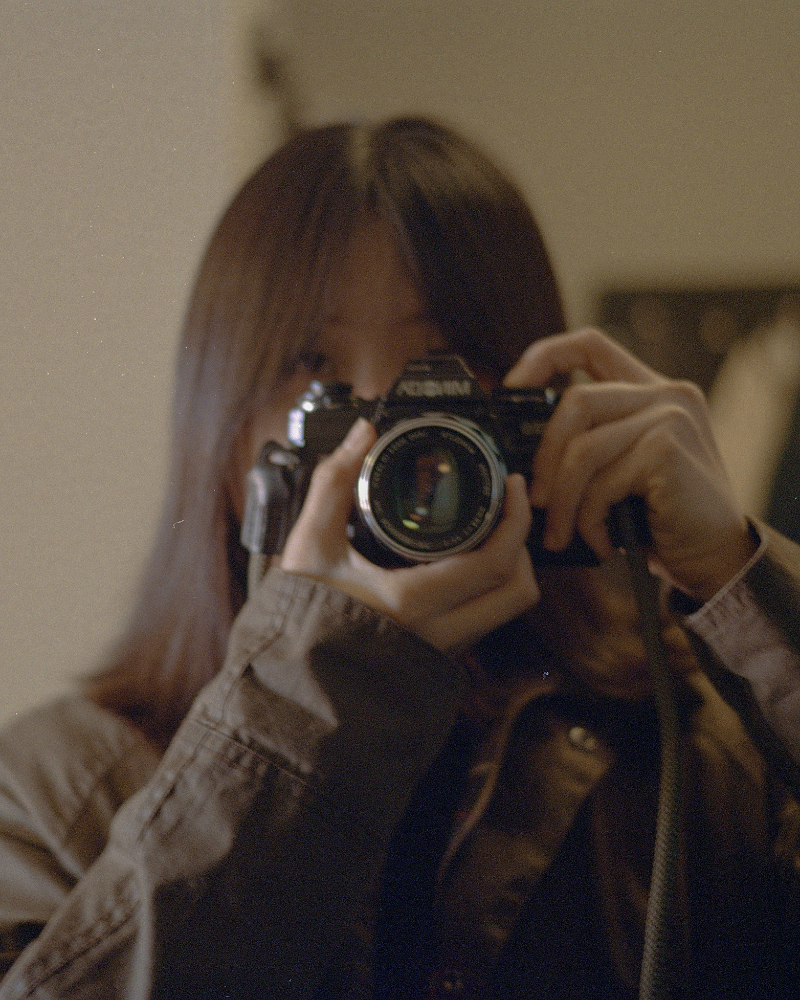

XIA TIAN is a photographer studying Photojournalism and Documentary Photography at the University of the Arts London, LCC. Fascinated by the relationship between humans and nature, space and memory, and inner exploration through dreams, she captures these themes through photography.
